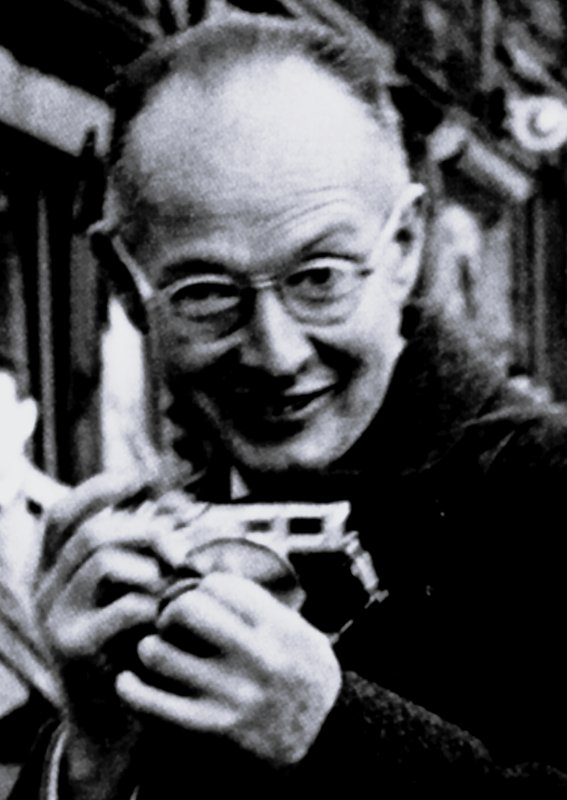
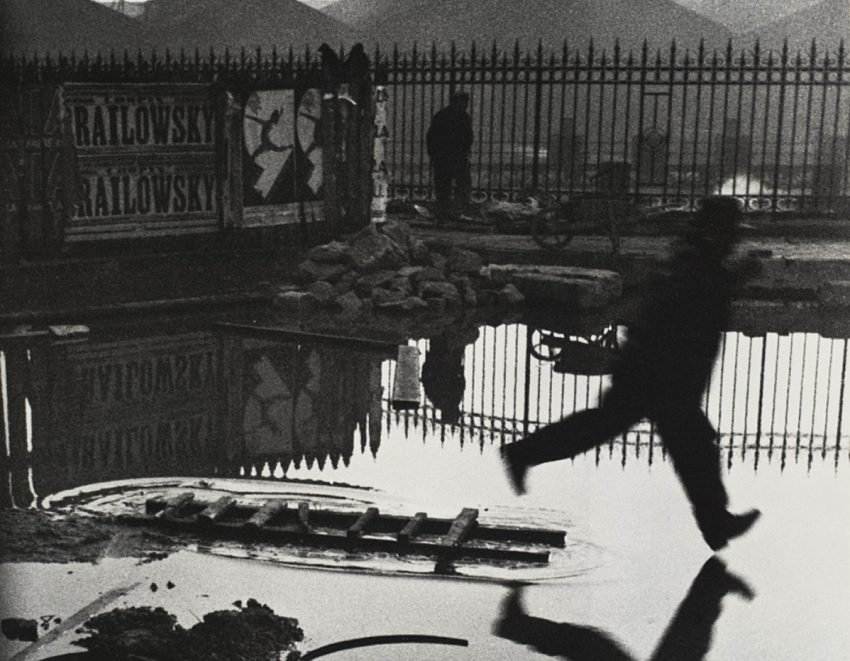
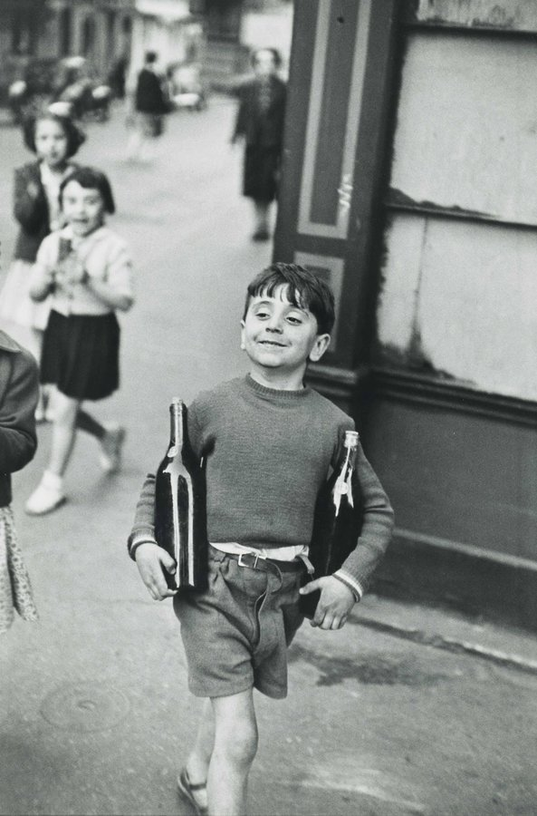
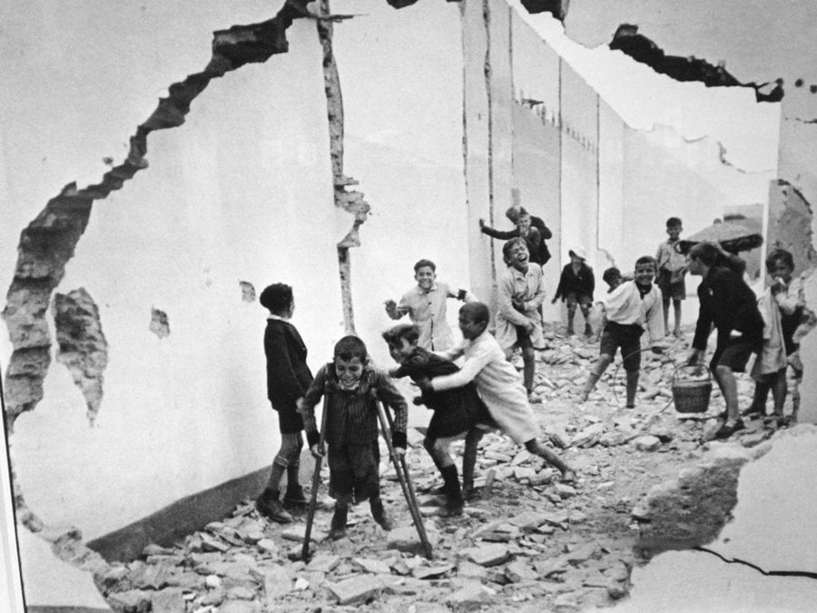

CC0 · Kimura Ihei · Wikimedia Commons
Henri Cartier-Bresson
1908 (Chanteloup-en-Brie) – 2004 (L'Isle-sur-la-Sorgue)
Cofundador Magnum Photos · Fotografia de carrer · Fotoperiodisme
Resum biogràfic
Cofundador de l'agència Magnum Photos el 1947. Va definir el vocabulari visual de la fotografia de carrer amb el concepte del moment decisiu (Images à la Sauvette, 1952). Influït pel Surrealisme i el Zen, va cobrir esdeveniments capitals del segle XX a l'Índia, la Xina i l'URSS. Als anys 70 va deixar la fotografia per tornar a la pintura i el dibuix, convençut que ja havia dit tot el que tenia a dir amb la càmera.
El seu segell
El moment decisiu. La fracció de segon en què forma i contingut coincideixen perfectament. La geometria al servei de la vida. La càmera com a extensió de l'ull i la ment, mai com a arma.
Composició
Golden Section, triangles i diagonals. Anticipa la geometria de l'escena i espera la figura humana que la completa. Usava el 50mm tota la vida sense excepció: "El 50mm veu com l'ull humà."
Llum i exposició
Preset hiperfocal a f/8: tot queda en focus entre 2 metres i l'infinit. Sense flash mai. "El flash és com arribar a una festa amb una pistola." Llum natural exclusivament.
Aproximació
Discret, s'acosta lentament. La Leica coberta de cinta negra per evitar reflexos i cridar menys l'atenció. Dispara en el moment precís, quan forma i acció conflueixen en un sol instant.
Revelat
B/N clàssic. Mai retallava les seves imatges: si calia retallar, és que la fotografia no era bona. Respectava la totalitat del negatiu com a prova de la integritat de la mirada.

HCB · Behind the Gare Saint-Lazare, París, 1932 · ús educatiu intern

HCB · Rue Mouffetard, París, 1954 · ús educatiu intern

HCB · Children playing in ruins, Sevilla, 1933 · ús educatiu intern